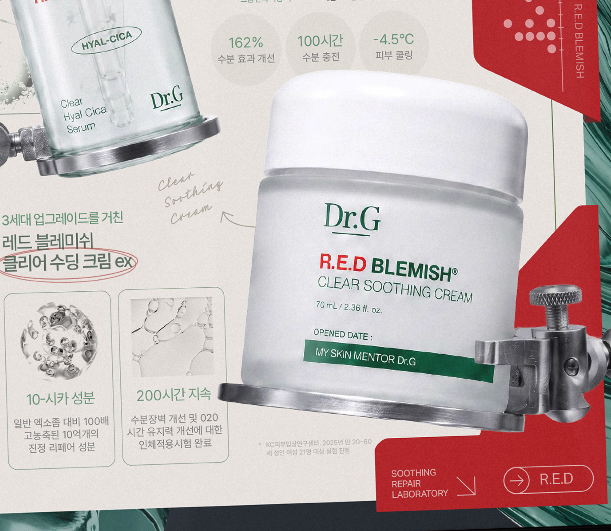
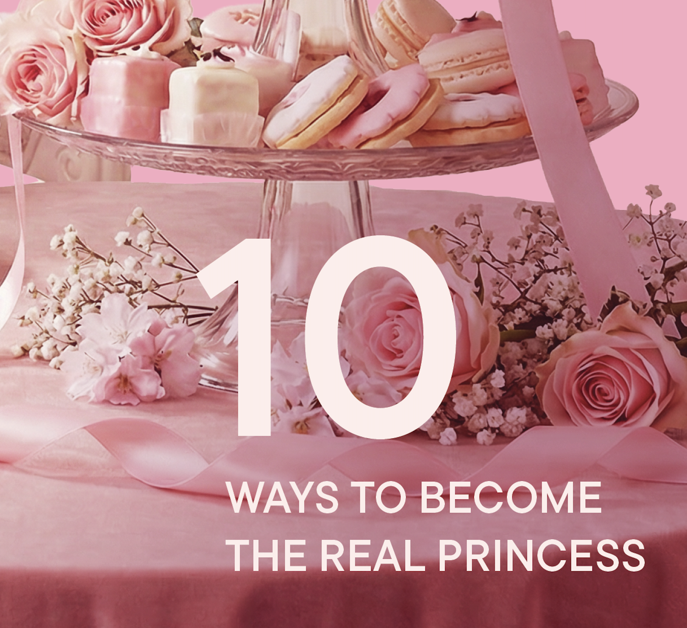
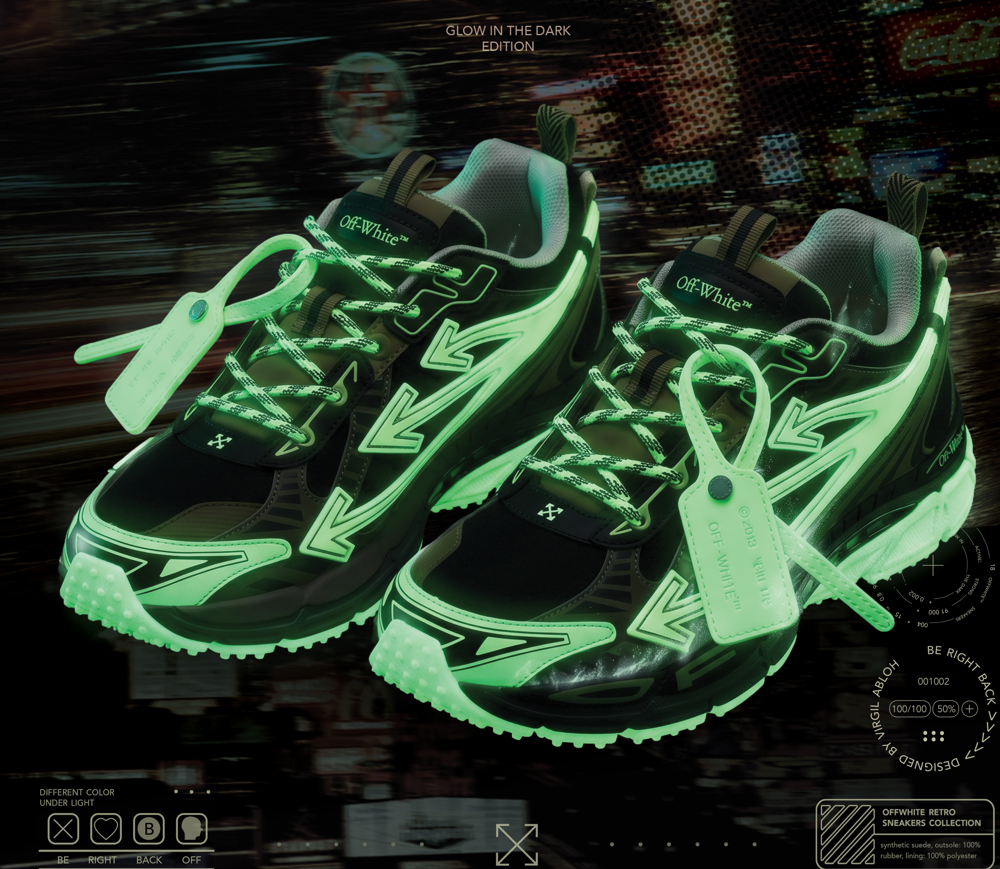
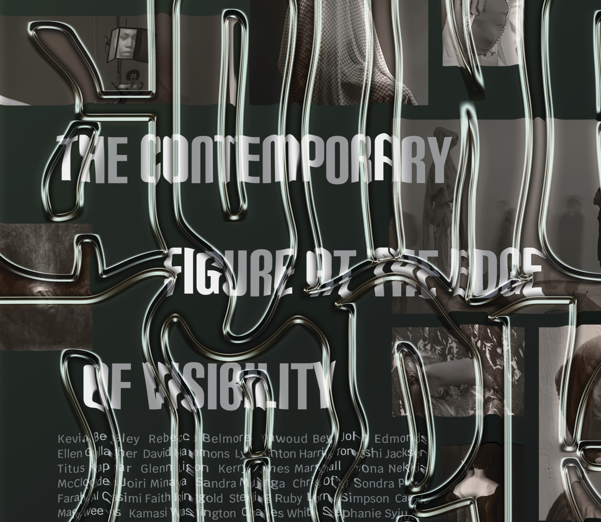
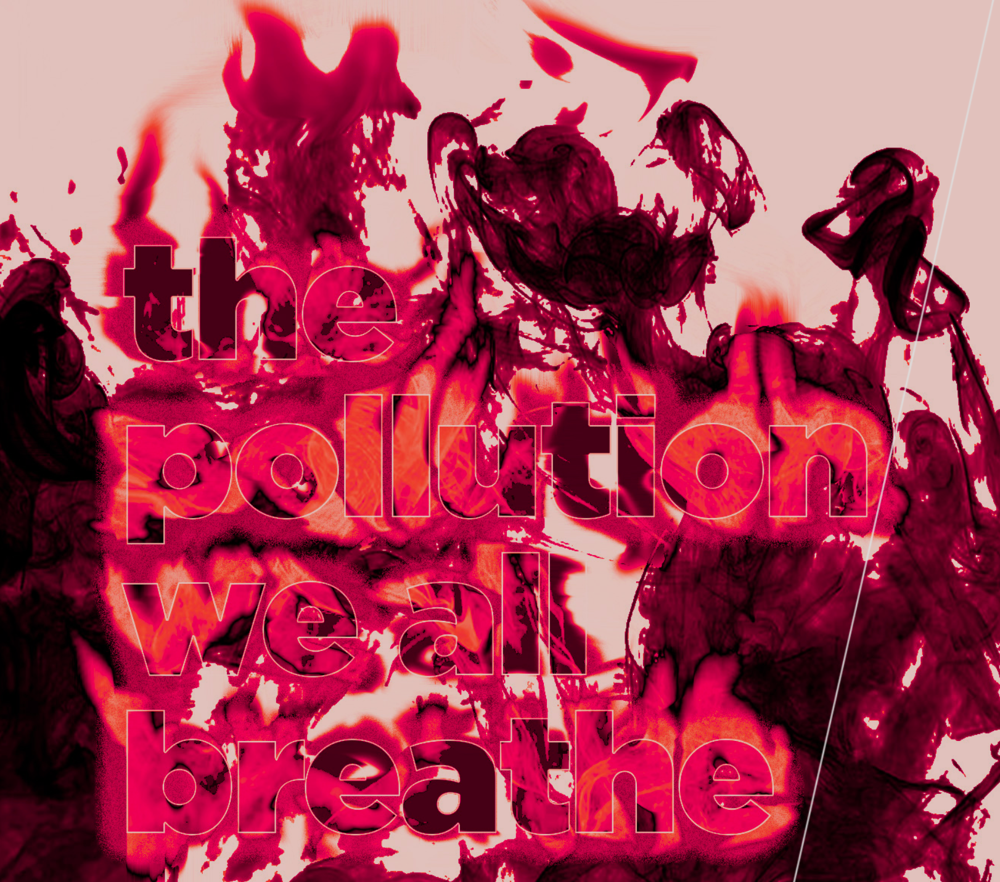

Taeeun's
Design Portfolio
안녕하세요! 한국에서 태어나 자랐고 현재 미국의 세인트루이스 워싱턴 대학교에서 디자인을 공부하고 있습니다. 편집, 그래픽, 모션 등 폭넓은 디자인 작업을 합니다.
Welcome to my portfolio! I am an interdisciplinary designer and am a rising senior in WashU. Originally from South Korea and currently based in the United States, my work ranges from editorial to graphic, branding, and motion design.
l.taeeun@wustl.edu
6300 Enright Ave,
MO 63130
+1(314) 448-2959
+82 010-8684-4181
content

닥터지의 리페어 연구소 팝업을 홍보하는 포스터와 리페어 수딩 크림을 소개하는 한국어 리플렛 제작
Developed a promotional poster for Dr.G’s Repair Lab pop-up and product leaflet highlighting the key benefits of the Repair Soothing Cream
Graphic Design:
Repair Lab
2026
포스터, 리플렛 디자인
Adobe suite, generative AI

"공주" 컨셉의 티 브랜드의 브랜딩, 마스코트 창작 및 광고 비주얼 제작
Created visual identity based on mascots for a princess themed tea brand
Branding:
Titi Tea
2026
브랜딩
Adobe suite, generative AI

오프화이트의 Be Right Back 시리즈 속 Glow In the Dark 스니커즈를 소개하기 위해 제작된 포스터
Created poster that introduces Offwhite's "Glow in the Dark Sneakers" from the Be Right Back Retro series
Graphic Design:
Be Right Back
2025
포스터 디자인
Adobe Suite, Generative AI

구겐하임 전시를 위한 포스터와 키네틱 타이포그래피 티저 영상 제작
Created poster and kinetic typgography teaser video for a Guggenheim exhibition
Graphic Design:
Going Dark
2025
포스터 디자인
Photoshop, Indesign

형식, 문화, 역사적 시대가 서로 다른 두 텍스트를 교차 구성한 아코디언 형식의 책 제작
Created an accordian style book that interweives two texts that differ in form, culture, and historical time frame.
Book Design:
To Evaporate, To Endure
2025
책 디자인
Indeisgn, Photoshop